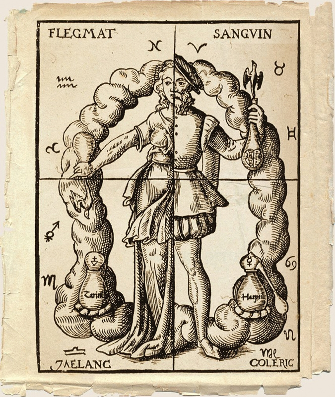

Wicked Bodies: The Pathologization of Female Sexuality from Witchcraft to the Web
In
early Greek medical writing based on the theory of the four bodily humours, it was assumed that women’s
humours were cool and wet, as opposed to men’s, which were hot and dry. They theorized that women required
sexual intercourse to heat and drain the blood, which is what led to women’s insatiable desire for semen.
This uncontrollable want was thought to make women unable to control their desires and more lustful than men
(Groneman, xviii).
This early medical theory, though archaic by modern standards, laid the foundation for enduring
assumptions about female sexuality that persist to this day.
Website Concept
For centuries, women’s bodies and desires have been scrutinized, controlled, and medicalized, whether
through witch trials, outdated medical diagnoses, or, more recently, viral internet discourse.
This
website takes an educational approach to showcase how historical accusations of witchcraft and
nymphomania were used to pathologize female sexuality and how those same narratives persist in today’s
digital culture.
By adapting a zine I created into an interactive format, the website will guide users through
moments in history when women were labelled as dangerous, deviant, or diseased for failing to conform to
societal expectations. The goal is to make this information engaging and accessible while revealing
unsettling parallels between past and present. We often assume that accusations like “witch” or
diagnoses like “nymphomaniac” belong to the past, things we’ve outgrown. But have we? Modern social
media platforms are filled with discussions that echo the same anxieties: from policing women’s sexual
agency to branding them as either “pure” or “corrupt”. The website highlights how these ideas haven’t
disappeared, they’ve just adapted to new mediums.